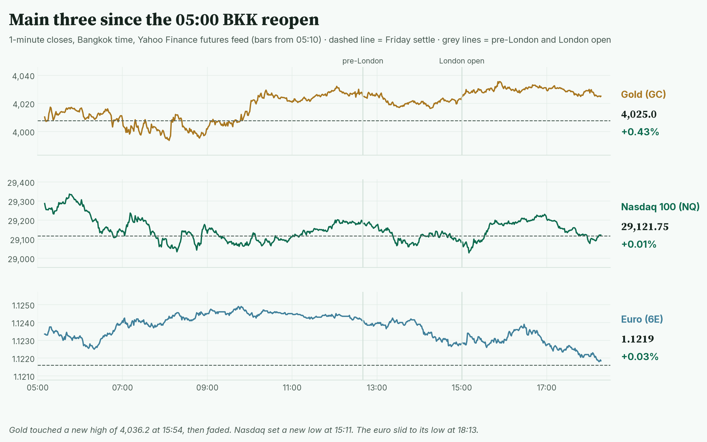
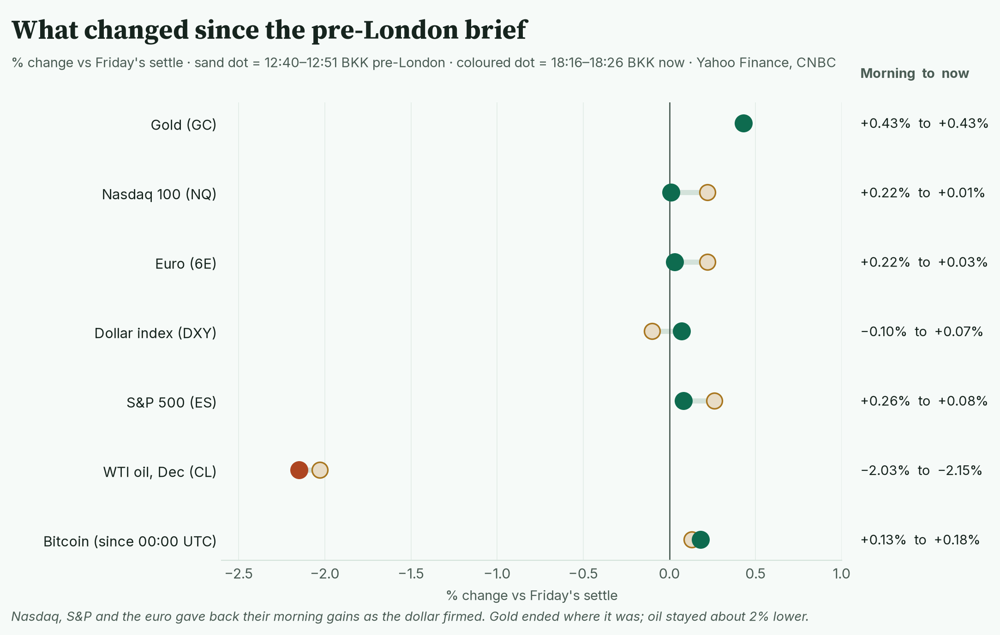
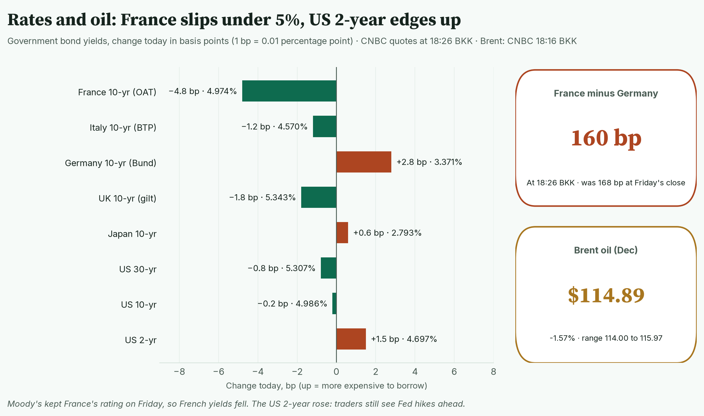
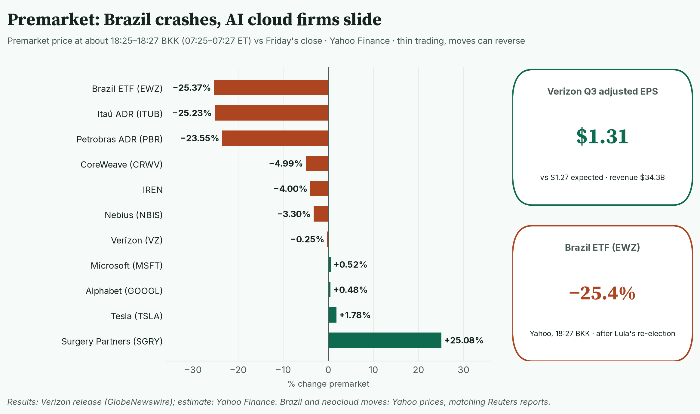
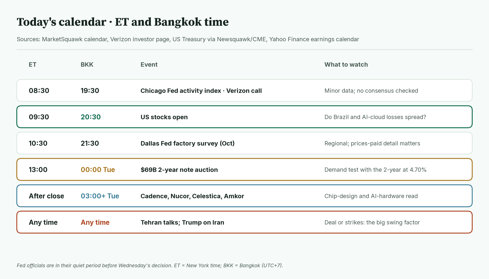
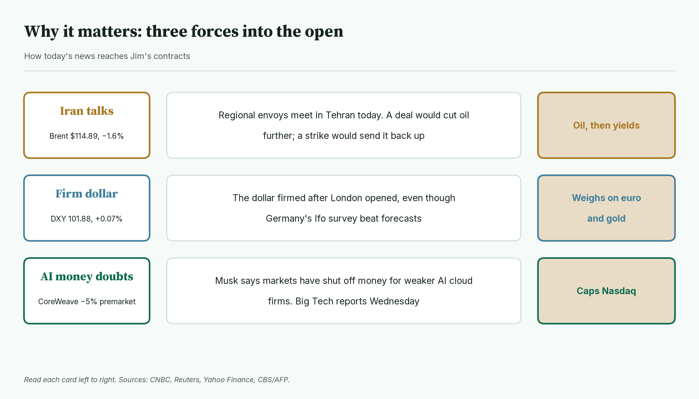
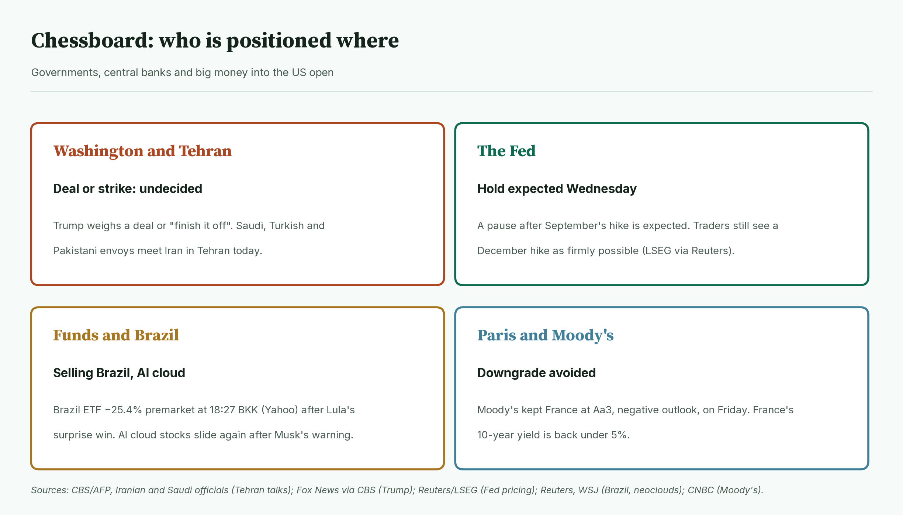
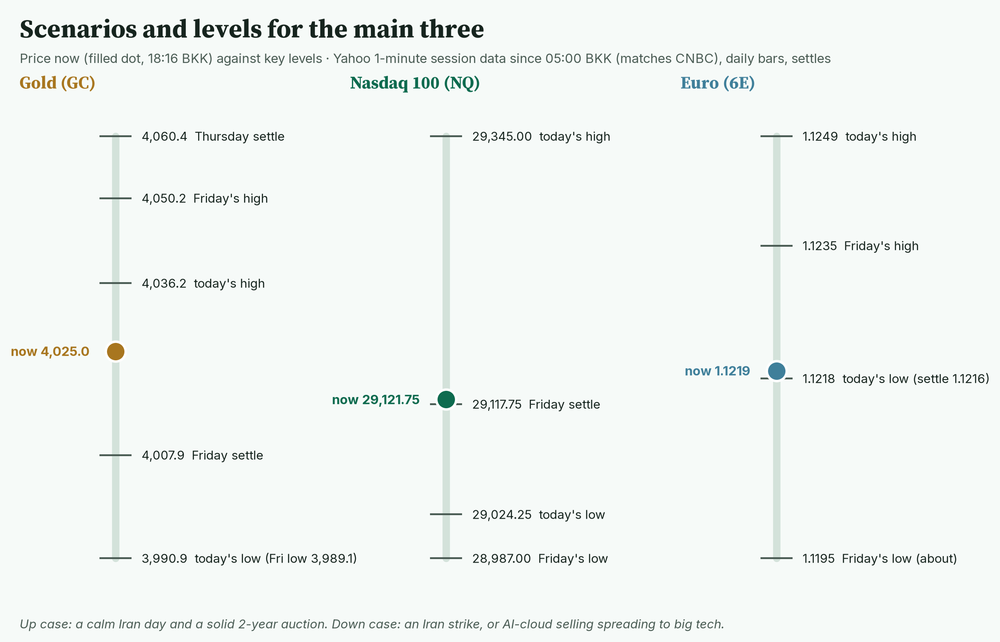
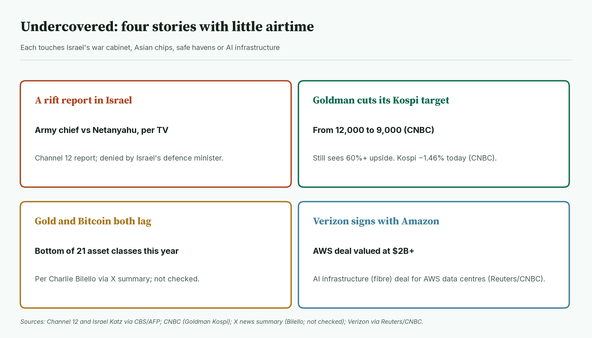
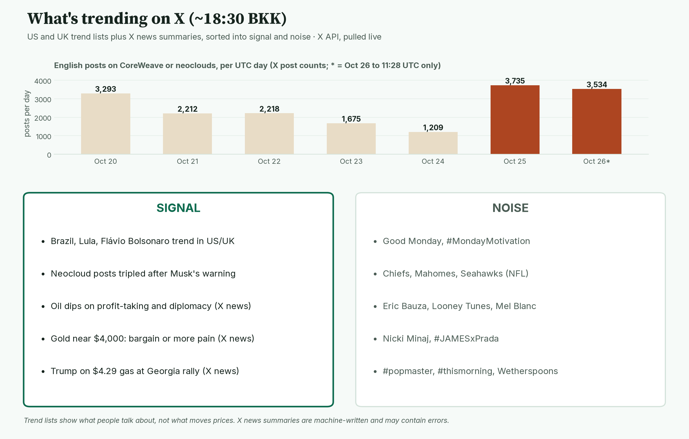

April · Market Intel, pre-NY · Mon Oct 26, 2026 · ~18:35 BKK / ~07:35 New York
Headline: the morning's gains faded. Nasdaq futures are flat at 29,121.75 and the euro slipped to its day low near 1.1219. Gold is unchanged since this morning at 4,025.0. Brazil is crashing in premarket trade after Lula's surprise win.
So what: today has little US data. Iran headlines, the 20:30 BKK stock open and a $69B two-year bond sale at 00:00 BKK set the tone. The big tests come later this week: the Fed early Thursday BKK, and Microsoft and Alphabet results.
1) Main instruments The three main contracts on 1-minute bars since the 05:00 BKK reopen. Gold made a new high after London opened, then faded; the euro slid into the evening. |
(Futures trade nearly around the clock, so they show the mood before stocks open. Quotes: Yahoo Finance futures feed at 18:16 BKK (07:16 New York), about 10 minutes delayed, and they match CNBC. Ranges: 1-minute bars in the window from the 05:00 BKK reopen to 18:16 BKK. I checked: Yahoo has no bars from 05:00 to 05:09; the first bar is 05:10. CNBC's full-session highs and lows match the ranges below.)
- Gold futures (GC, Dec): 4,025.0, +0.43%, at 18:16 BKK. Driver: cheaper oil eases rate-hike fears, but a firmer dollar caps the bounce.
- Gold's range is 3,990.9 (08:03 BKK) to 4,036.2 (15:54 BKK). The high is new since pre-London.
- Re-checked: today's low held 1.8 points above Friday's low of 3,989.1 (Yahoo daily bars). Spot gold (the cash price) is 4,012.19, back above the round 4,000 after closing Friday at 3,995.52 (CNBC, 18:26 BKK).
- Nasdaq 100 futures (NQ, Dec): 29,121.75, +0.01%, at 18:16 BKK. Driver: AI cloud stocks are falling again before Big Tech earnings.
- Nasdaq's range is 29,024.25 (15:11 BKK) to 29,345.00 (05:45 BKK). The 15:11 low is new since pre-London, but it held above Friday's low of 28,987.00.
- Euro futures (6E, Dec): 1.1219, +0.03%, at 18:16 BKK. Driver: the dollar firmed after London opened, even though Germany's business survey beat forecasts.
- The euro's range is 1.1218 (18:13 BKK) to 1.1249 (09:44 BKK). It is sitting on its day low. Spot euro is 1.1195, −0.06% (CNBC, 18:26 BKK).
- Takeaway: gold held its gains; Nasdaq and the euro gave theirs back.
Context. The dollar index (DXY, the dollar against six major currencies) is 101.88, +0.07% (Yahoo, 18:16 BKK), up from 101.71 this morning. The US 10-year yield (what the US government pays to borrow for 10 years) is 4.986%, down 0.2 basis points (CNBC, 18:24 BKK; a basis point is 0.01 percentage point). Its range today is 4.961% to 4.999%, just under 5%. The VIX (the "fear gauge" built from S&P 500 option prices) is 19.53, +0.41% versus Friday's close (CNBC, 18:26 BKK; Yahoo showed 19.72 at 18:11, so early-hours readings are noisy). US oil (CL, Dec) is 101.05, −2.15% (18:16 BKK), with a range of 100.60 (15:48 BKK) to 102.63 (CNBC; this came in the first minutes, before Yahoo's bars start). Brent (Dec) is 114.89, −1.57% (CNBC, 18:16 BKK), with a range of 114.00 to 115.97 (CNBC). S&P 500 futures (ES) are 7,665.50, +0.08% (18:16 BKK), with a range of 7,651.75 (08:17 BKK) to 7,698.50 (CNBC, first minutes). Bitcoin is $80,188, +0.18% since 00:00 UTC (Yahoo, 18:26 BKK).
2) Top signals: what changed since pre-London Each line runs from the 12:40–12:51 BKK reading to 18:16–18:26 BKK. Stocks and the euro gave back their gains; gold did not move. |
- Germany beat. The Ifo index (a monthly survey of about 9,000 German firms) rose to 90.2, against about 90.0 to 90.1 expected. (High: Ifo via Investing.com, WSJ)
- The euro still fell. The dollar firmed after London opened. I found no single headline behind it. (Read, not confirmed)
- Brazil is crashing. The iShares Brazil fund (EWZ) is −25.4% premarket at 18:27 BKK (Yahoo). It was about −26.6% to −26.7% earlier (UOL, 17:00 BKK; Estadão, 17:41 BKK). (High: Yahoo prices; Reuters reports a similar drop)
- Envoys reach Tehran. Saudi, Turkish and Pakistani officials hold security talks with Iran today. (High: Iranian and Saudi officials via CBS/AFP)
- Takeaway: a firm dollar and AI jitters erased the morning's gains.
3) Rates, FX and oil Change in 10-year and other government yields today, CNBC at 18:26 BKK. France's yield fell most after Moody's held its rating. |
- US 2-year 4.697%, +1.5 bp. 10-year 4.986%, −0.2 bp. 30-year 5.307%, −0.8 bp (CNBC, 18:26 BKK).
- Mentor: the 2-year tracks Fed expectations. It rising while the 10-year is flat means traders still expect hikes.
- Moody's kept France at Aa3 with a negative outlook late Friday, New York time. Markets had expected a cut. (High: CNBC, Reuters)
- France's 10-year is 4.974%, down 4.8 bp. The gap over Germany is 160 bp at 18:26 BKK, down from 168 bp at Friday's close (CNBC).
- The yen weakened to 157.37 per dollar, +0.33% (CNBC, 18:26 BKK). The Brazilian real is down about 10.5% in Chicago futures, roughly 5.60 per dollar (CME November contract via Yahoo, 18:27 BKK). Brazil's own currency market has not opened yet.
- Oil: WTI is down 2.15%, Brent 1.57%. Yahoo's main Brent symbol has moved to the January contract, at $109.89. That is why some headlines say Brent is "below $110."
- Takeaway: oil is still the lever, but today the dollar is doing more work.
4) Premarket earnings Premarket moves at about 18:25–18:27 BKK versus Friday's close (Yahoo). Brazil and AI cloud names fall; Surgery Partners jumps. |
- Verizon: −0.3%. Adjusted EPS (earnings per share, excluding one-offs) $1.31 vs $1.27 expected. Revenue $34.3B; the LSEG consensus was $34.74B (Reuters via CNBC). It raised its yearly EPS guide to $5.04–5.06. (High: company release; estimates: Yahoo Finance, Portfolio Terminal)
- Verizon also signed a $2B+ AI infrastructure (fibre) deal with Amazon Web Services. Verizon fibre will link AWS data centres. (High: Reuters via CNBC)
- Brazil: EWZ −25.4%, Itaú −25.2%, Petrobras −23.6% (Yahoo, 18:27 BKK). Brazil's own market opens later, so these are early, thin prices.
- AI cloud firms ("neoclouds"): CoreWeave −5.0%, IREN −4.0%, Nebius −3.3%. Musk said on X that markets have "almost entirely shut off access to money" for such firms (Reuters).
- Big Tech is steady: Microsoft +0.5%, Alphabet +0.5%, Tesla +1.8%.
- Surgery Partners: +25.1% on reports of takeover talks with Bon Secours Mercy Health (Reuters, citing media reports).
- Takeaway: the risk is AI funding stress spreading from small cloud firms to the giants.
5) US calendar today (ET and BKK) Monday's US schedule in New York and Bangkok time. The bond auction is the main scheduled test. |
- 08:30 ET / 19:30 BKK: Chicago Fed activity index. Minor; no forecast checked. Verizon's call starts at the same time.
- 09:30 ET / 20:30 BKK: US stocks open.
- 10:30 ET / 21:30 BKK: Dallas Fed factory survey. Regional; no forecast checked.
- 13:00 ET / 00:00 Tue BKK: $69B two-year note auction (US Treasury, via Newsquawk and CME). Weak demand would push yields up.
- After the close (from about 03:00 Tue BKK): Cadence, Nucor, Celestica, Amkor and Rambus report (Yahoo Finance calendar).
- This week: Fed decision 01:00 BKK Thursday. Microsoft and Alphabet report after Wednesday's US close. US GDP and PCE inflation (the Fed's preferred price gauge) at 19:30 BKK Thursday.
- Takeaway: 20:30 BKK and 00:00 BKK are today's deciders.
6) Why it matters Three forces and how each reaches the main contracts. |
- Iran sets the oil price. A deal would cut oil further; a strike would send it back up.
- Oil feeds rate fears. Pricey oil lifts inflation, which pushes the Fed toward hikes.
- Gold pays no interest. When yields and the dollar rise, it loses appeal.
- Nasdaq lives on AI. If lenders turn away from AI cloud firms, investors may doubt Big Tech's spending plans too.
- Takeaway: a quiet Iran day helps all three; a strike hurts Nasdaq and the euro fast.
7) Chessboard Who is acting or positioned into the US open. Iran is the one that can move everything at once. |
- Washington and Tehran: Trump told Fox News he must choose between a deal and to "finish it off." Iran says its stance won't change. (High: CBS/AFP)
- Regional envoys: Saudi Arabia's defence minister, Pakistan's army chief and Turkey's spy chief are in Tehran today. (High: Iranian and Saudi officials via CBS/AFP)
- Israel: it votes Tuesday. Netanyahu warns Iran may try to disrupt the vote. (High: CBS/AFP)
- The Fed: a hold is expected Wednesday after September's hike. Traders still see a December hike as firmly possible. (High: Reuters, LSEG data)
- Funds: money is leaving Brazil and AI cloud stocks. (High: Yahoo prices, Reuters, WSJ)
- Paris: Moody's gave France time. The 2027 budget still has to pass. (High: Reuters)
- Takeaway: the Iran decision is the one move that is not on any calendar.
8) Scenarios and levels Price now against today's key levels. Nasdaq and the euro sit just above their settles. |
- Up case: a calm Iran day and a solid two-year auction. Gold clears 4,036.2 and eyes Friday's high of 4,050.2. Nasdaq gets back above 29,345.00. The euro recovers 1.1235.
- Down case: an Iran strike, or AI selling spreads to Big Tech. Gold breaks 3,990.9 and Friday's 3,989.1. Nasdaq loses 29,024.25, then 28,987.00. The euro breaks 1.1218 and eyes Friday's low of about 1.1195.
- Takeaway: Friday's lows are the floors for all three. This is a framework, not a forecast.
9) Undercovered Four stories with little airtime. Three are confirmed by news reports; one comes from X summaries only. |
- A rift report in Israel. Channel 12 reported a clash between Netanyahu and the army chief over a new directive. Israel's defence minister called it false. (Medium: Channel 12 via CBS/AFP)
- Goldman cut its Kospi target to 9,000 from 12,000. It still sees more than 60% upside and stays overweight Korea. Korea's Kospi fell 1.46% today. (High: CNBC, Seoul Economic Daily)
- Gold and Bitcoin are this year's laggards, both down about 7%, per strategist Charlie Bilello. (Low-medium: X news summary; not checked)
- Verizon and Amazon signed a $2B+ AI infrastructure (fibre) deal. (High: Reuters via CNBC)
10) What's trending on X (~18:30 BKK) Daily English posts on CoreWeave or neoclouds, plus today's trends sorted into signal and noise. Posts tripled to 3,735 on Oct 25 after Musk's post, and reached 3,534 by 11:28 UTC today. |
- US: Brazil, Lula, Good Monday, Eric Bauza, Chiefs, Nicki Minaj.
- UK: Brazil, Lula, Flávio Bolsonaro, Oxford Street, Wetherspoons, #popmaster.
- Signal: Brazil's election still trends in both countries. X finance stories focus on oil easing and gold near $4,000. (Medium: X news summaries)
- Signal: an X news summary says Trump brushed off gas at $4.29 a gallon at a Georgia rally. (Low-medium: X news summary; price not checked)
- Data point: neocloud posts tripled after Musk's warning (X post counts).
- Noise: Monday greetings, NFL, Looney Tunes voice actors, celebrity names.
Bottom line
The morning's calm faded, but nothing broke. For Jim: gold at 4,025.0 needs 4,036.2 to extend; 3,989.1, Friday's low, is the floor. Nasdaq at 29,121.75 is flat; 29,024.25 and 28,987.00 are the lines. The euro is on its 1.1218 low; Friday's low, about 1.1195, is next. Interpretive note: with the Fed and Big Tech still ahead, many traders may wait. An Iran headline is the main way today's ranges break. That is a read, not a forecast.
Confidence: Futures levels: high for direction, medium-high for the exact tick (Yahoo feed, ~10 min delayed; settles and ranges match CNBC). Yahoo 1-minute bars begin at 05:10 BKK; CL and ES highs came before that and use CNBC. Yields, spot gold, spot euro, Brent: CNBC, time-stamped. Ifo: high. Verizon: company release; estimates vary by source. Brazil premarket: Yahoo prices, consistent with Reuters and WSJ; thin trading. Euro drop cause: my read, not confirmed. Goldman Kospi target: high (CNBC). Brazilian real: CME futures, since Brazil's spot market is shut. Bilello data and gas price: X news summaries, not checked. Bill-auction times are not listed because sources disagree.
Charts: /workspace/april-charts/2026-10-26/pre-ny-{scoreboard,main3,delta,rates,earnings,calendar,why,chess,scenarios,under,xsplit}.png |